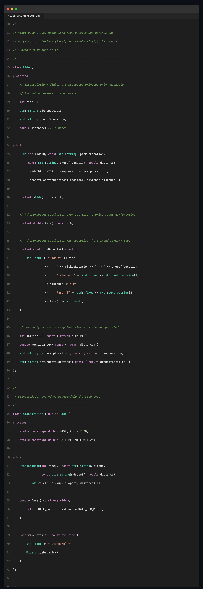
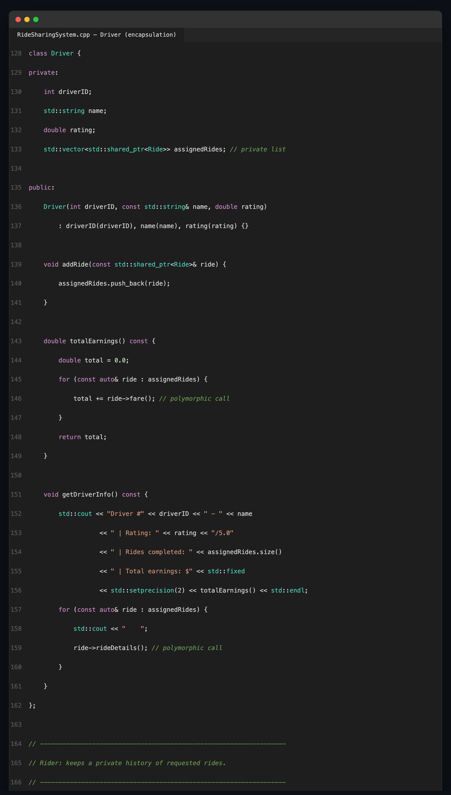
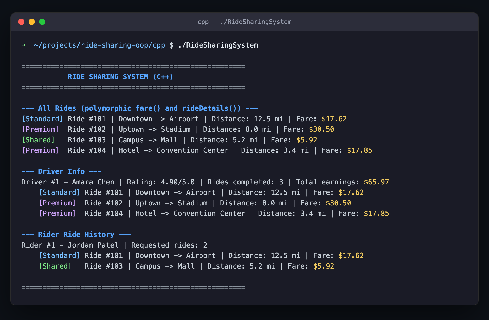
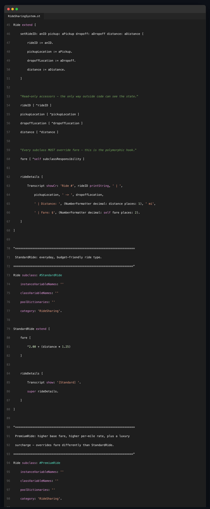
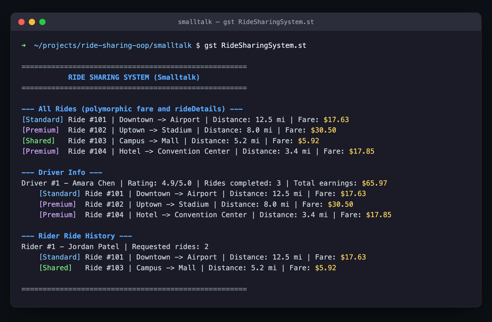

Object-Oriented Programming in Practice: A Ride Sharing
System in C++ and Smalltalk
Jalshree Khanal
[Institution Name]
[Course Name]
[Instructor Name]
July 15, 2026
This report describes a Ride Sharing System implemented twice—once in C++ and once in GNU Smalltalk—to demonstrate three core object-oriented programming (OOP) principles: encapsulation, inheritance, and polymorphism. Both versions share an identical design: a base Ride class; three subclasses, StandardRide, PremiumRide, and SharedRide, each pricing trips differently; a Driver class that accumulates completed rides; and a Rider class that accumulates requested rides. A short demonstration program stores several ride objects of different subclasses in one collection and calls fare() and rideDetails() on each polymorphically. The full source code, a build/run README, and execution screenshots are available at the project's GitHub repository: https://github.com/jalshreekhanal4-sketch/ride-sharing-oop.
C++ hides state using access specifiers: Ride keeps its fields protected, and Driver and Rider keep their ride lists (assignedRides, requestedRides) private, exposing them only through methods such as addRide() and getDriverInfo(). Encapsulation is therefore something the programmer must actively declare (Stroustrup, 2013). Smalltalk enforces the same guarantee unconditionally: an instance variable such as assignedRides is never visible outside the object at all, since the only way to interact with a Smalltalk object is by sending it a message (Goldberg & Robson, 1983). Encapsulation is not a stylistic choice in Smalltalk; it is a property of the object model itself.
C++ expresses inheritance with the class Derived : public Base syntax, and subclass constructors explicitly forward shared state to the base constructor—for example, StandardRide's constructor delegates to Ride(rideID, pickup, dropoff, distance) in its initializer list. Smalltalk expresses the same relationship through a class-creation message sent to the superclass, Ride subclass: #StandardRide ..., reflecting Smalltalk's more dynamic style, in which even class definitions are messages sent to existing objects (Goldberg & Robson, 1983). Both implementations produce an identical single-inheritance hierarchy rooted at Ride.
C++ requires fare() and rideDetails() to be declared virtual in the base class, with fare() as a pure virtual function, enabling dynamic dispatch when objects are accessed through a std::shared_ptr<Ride> (Stroustrup, 2013). Iterating over a vector of such pointers and calling ride->fare() invokes the correct override for each concrete subclass at runtime. Smalltalk has no virtual keyword because every method call is a dynamically dispatched message by default: sending fare to any Ride causes the runtime to look up the method starting at the receiver's actual class (Free Software Foundation, 2023). StandardRide, PremiumRide, and SharedRide each simply define their own fare method, and polymorphism follows automatically.
The comparison highlights a difference in philosophy rather than capability. C++ is statically typed and compiled, so it makes OOP guarantees opt-in and enforces them at compile time, giving the programmer fine-grained control over which behaviors are polymorphic, encapsulated, or inherited. Smalltalk is dynamically typed and purely message-based, so the same guarantees are unconditional consequences of its object model. Despite this difference, both languages arrive at the same object-oriented design for the Ride Sharing System, suggesting that encapsulation, inheritance, and polymorphism are language-independent concepts whose enforcement mechanisms simply differ.
Implementing the same Ride Sharing System in C++ and Smalltalk shows that encapsulation, inheritance, and polymorphism can be realized through different mechanisms while producing equivalent designs: C++ favors explicit, compiler-checked declarations, while Smalltalk favors implicit guarantees built into a pure message-passing object model.
Free Software Foundation. (2023). GNU Smalltalk user's guide. https://www.gnu.org/software/smalltalk/manual-base/html_node/
Goldberg, A., & Robson, D. (1983). Smalltalk-80: The language and its implementation. Addison-Wesley.
Stroustrup, B. (2013). The C++ programming language (4th ed.). Addison-Wesley.
Figure 1
C++ — Ride Base Class and StandardRide / PremiumRide Subclasses

Note. Shows encapsulated fields (protected), the pure virtual fare() declared in Ride, and each subclass's overridden fare()/rideDetails() (inheritance and polymorphism).
Figure 2
C++ — Driver Class Demonstrating Encapsulation

Note. assignedRides is private and reachable only through addRide() and getDriverInfo(); totalEarnings() and getDriverInfo() call ride->fare() and ride->rideDetails() polymorphically.
Figure 3
C++ — Sample Program Output

Note. Output of ./RideSharingSystem, showing polymorphic fare()/rideDetails() results for all ride types, driver earnings, and rider history.
Figure 4
Smalltalk — Ride, StandardRide, and PremiumRide Class Definitions

Note. Instance variables have no accessor unless explicitly defined (encapsulation by default); Ride subclass: #StandardRide creates the subclass (inheritance); each subclass overrides fare (polymorphism).
Figure 5
Smalltalk — Sample Program Output

Note. Output of gst RideSharingSystem.st, mirroring the C++ program's behavior via message sends instead of virtual function calls.